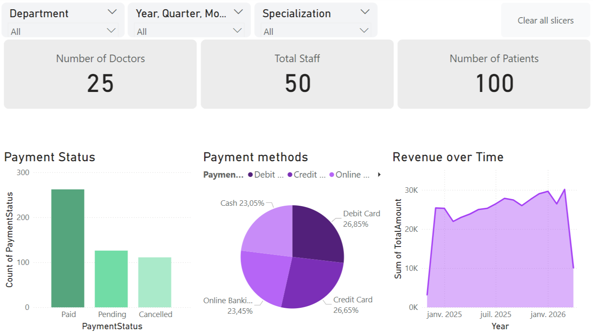
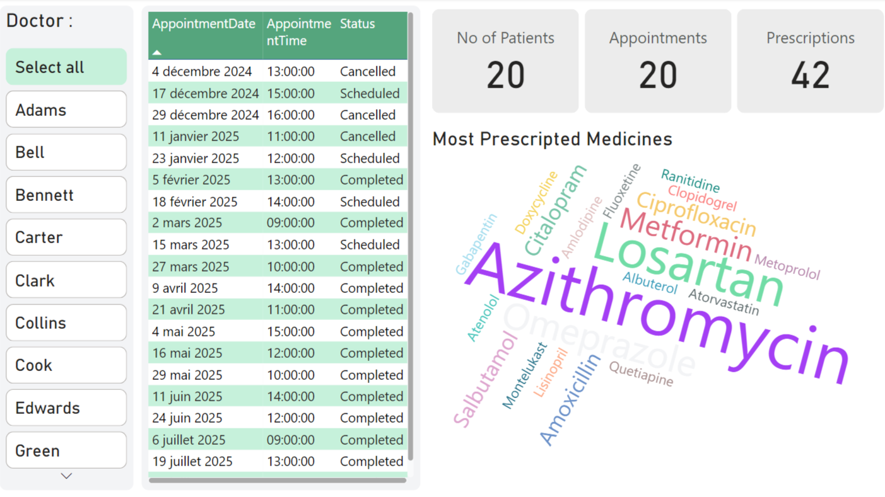

Introduction
This project showcases a comprehensive Healthcare Management Dashboard Suite built using Power BI, with data preparation performed in Excel and sourced from an MS SQL Server database. These interconnected dashboards provide actionable insights into hospital operations, financial health, and clinician activity to support data-driven decision-making.
Dashboard 1
Hospital Operations Snapshot: Displays key real-time metrics including average patient stay, available staff/doctors, room capacity, today's appointment statuses (scheduled, completed, cancelled), and current medicine inventory levels versus prescriptions.
Dashboard 2

Administrative & Financial Overview: Monitors overall staffing and patient counts, tracks payment statuses (paid, pending, cancelled), analyzes preferred payment methods, and visualizes revenue trends over time, filterable by department, specialization, and date range.
Dashboard 3
Doctor Performance & Activity: Offers a detailed view filterable by doctor, showing their specific appointment schedule and status, associated patient and prescription counts, and a word cloud highlighting their most frequently prescribed medications.
Conclusion
Collectively, these dashboards provide a multi-dimensional view critical for effective healthcare management, covering operational efficiency, financial performance, and individual clinician contributions. This project demonstrates proficiency in integrating Power BI, Excel, and MS SQL Server to transform complex healthcare data into clear, interactive, and insightful visualizations that empower users to monitor performance and identify areas for improvement.